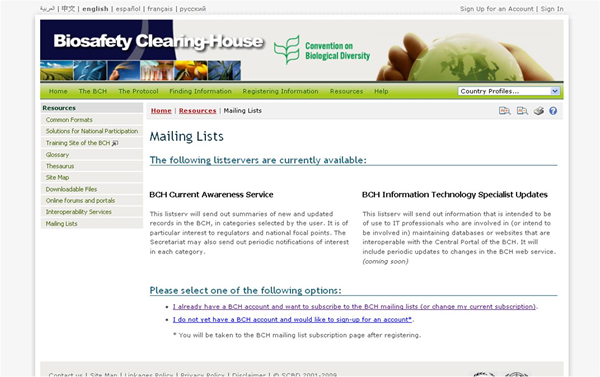
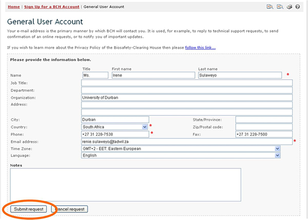

The Mailing List provides access to the listservs that are available through the BCH Central Portal. Listservs are lists of e-mailing addresses for people who have signed up to receive regular information about a particular topic.
The BCH Current Awareness Service sends out regular updates summarizing new information that has been added to the BCH. While it is sent directly to users by e-mail, it is also possible to receive the updates by fax (please contact the Secretariat to enlist your fax number for this service).
The categories of information included in the current awareness summaries, as well as the frequency of their delivery, may be individually customized by each user.
The BCH Information Technology Specialist Updates sends out information that is intended to be of use to IT professionals who are involved in maintaining databases or websites that are interoperable with the BCH. It includes updates on changes to the BCH web service.

The Mailing List page also provides links to subscribe to the available services or to manage/update user’s subscriptions.
The first link takes the user to the Sign In to the Management Centre page. Once signed into the Management Centre the user may subscribe to a listserv.
The second link opens the Sign Up for a BCH Account page. Users register according to their affiliation with the BCH (e.g. BCH National Focal Point, Capacity-building Organization, Biosafety Expert, etc.)
Details on using the Management Centre are provided in Module MO06.

 See Also
See Also
MO 6 Registering Information in the BCH Central Portal
Registering Information in the BCH Central Portal